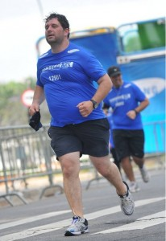
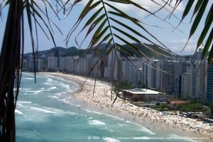
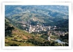

vamo, vamo, vamo…
Posts tagged viajando
Mogi, Mogi, a terra do caqui…
77 years
by Alecão
in Ex-sedentário
Demorei mas finalmente eu vou fazer o post sobre a corrida de Mogi das Cruzes.
Moro em Santo André e para chegar em Suzano (para encontrar o Luciano) levei mais de 1 hora e para ajudar o Google Maps me enganou. Na sequência, eu e o Luciano partirmos para Mogi das Cruzes, cidade vizinha de Suzano, chegamos lá era antes das 8, a largada era apenas as 8:30. E o sol já estava BRILHANDO.

Encontramos por lá o Edson, que manda muito bem na corrida e estava junto com a sua assessoria.


Meus tempos (paces):
- Km 1 – 6:23 – Come√ßamos rápido, principalmente por causa do tumulto da largada, pois logo na largada¬†voltávamos e corremos em volta do Mogi Shopping, “conhecendo o estacionamento”. Logo sa√≠mos do estacionamento e cruzamos uma linha f√©rrea, muita curva, iamos pela cal√ßada, pelo meio fio…
- Km 2 Р7:03 РRítimo já aceitável para mim. E estávamos em subida.
- Km 3 – 7:27 – Um pouquinho de descida.
- Km 4 Р8:05 РUma outra subidinha. E o sol começa a esquentar o coco. Tava aquele sol ardido. O que salvava era a sombra do muro. Logo viramos a direita e começa uma descida um pouco antes de chegar no 5. Tentando recuperar o rítimo.
- Km 5 – 7:36 – A descida ajudou a recuperar o tempo. Viramos para direita de novo.


- Km 6 – 8:40 – o sol estava nas costas, e a água não mais resfriava meu corpo. Os passos foram ficando pesados e eu falei para o Luciano. “Vai embora”. Ele esta em um r√≠timo bom e eu não queria atrapalhar. Passei a caminhar rápido. Não tinha sombra, não dava para fugir do calor.
- Km 7 Р 8:54 РAlém do calor, começa uma subida meio chata, depois conversando com o Luciano, ele me disse que caminhou apenas nesta subida.
- Km 8 Р 8:14 РNo final da subida, começou a aparecer sombras, minha salvação. Alternava corrida com caminhada, até que um pouco antes da chegada, uma descida, volto a correr, encontro o Edson pouco antes da chegada, dando o maior incentivo.
Terminei a prova com o tempo oficial de 01:02:25 na 776º posição geral e 129º na minha faixa etária.

Para fechar com chave de ouro, tiramos fotos com os “s√≥zias”:


Achando que eu tinha dado tudo nesta corrida, o cansa√ßo maior estava por vir. Levei o Luciano para a casa dele e depois viajei de volta para Santo Andr√©, minha mulher me esperava para uma festinha a tarde, tomei um banho super rápido e fomos. Voltando para casa quase as 8 da noite. O Maur√≠cio passa mal, vomita, uma, duas, tr√™s… fomos para o hospital. Voltei de lá as 23:00 e a Andrea ficou por lá com ele. E fiquei acordado em casa com a Ol√≠via esperando a Andrea me ligar. As 3 da manhã a Ol√≠via vomitou. Corri com ela para o hospital e, com a Andrea, trocamos de filho, voltei para casa com o Maur√≠cio e deixei a Ol√≠via e Andrea no hospital. Dormi as 4 da manhã, porque não tinha mais condi√ß√µes, era zumbi em pessoa, 23 horas acordado com direito a uma corrida de 8K. 8 horas a Andrea me liga para buscar ela. 4 horas de sono me ajudaram muito. Fui dormir novamente somente a noite. Gra√ßas a Deus as crian√ßas não tiveram reca√≠das e ficaram √≥timas depois das sess√µes de soro.
Um ano da primeira prova de Alex e Claudio (comemorando em grande estilo)
287 years
by Alecão
in Ex-sedentário
Este é um post elaborado a quatro mãos (do Alex e do Claudio).

Faz 1 ano em que eu (Alex) aceitei participar da minha primeira corrida, na época a idéia partiu de mim e o Claudio pirou ao escutar a idéia. Naquela corrida corremos lado-a-lado e com certeza sem ele não teria completado a prova.
Desta vez a coisa foi diferente. Claudião se preparou para encarar a maratona de Curitiba e eu quis fazer um Deja-vu correndo novamente a Samsung 10K e desta vez sozinho.
Falando nisso, todas as corridas que eu participei, tive companhia e nessa em particular eu corri sozinho… Portanto, tive que contar muito com a for√ßa de vontade.
Escrevendo esta introdu√ß√£o fiquei imaginando como iria fazer um texto a quatro mãos, sendo que não estamos juntos. Então eu imaginei… Escrevo minha parte e depois o Claudio acrescenta a dele. E como fazer isso? A resposta √© colocando os horários e depois intercalando…

Deus! Escrever agora, emocionado, fica mais complicado.
A data realmente pedia uma comemoração especial. Afinal, um ano da primeira prova oficial depois de nossa resolução de parar de reclamar da má sorte/saúde e literalmente corrermos para o abraço de uma vida feliz!
Partamos então para a parte Parananense da comemoração, porque eu não comemorei sozinho em Curitiba, nosso idolo do Blog, o Thiago, esteve comigo na aventura. E que aventura:
21:45 (Claudio) РSábado 20.11. -Thiago e eu estamos na Rodoviária do Tiete, aguardando o horário de partida do ônibus que nos conduziria até Curitiba.

02:30 (Alex) РAcordei, sem sono, maldita ansiedade, tentei dormir novamente sem condições. Mesmo assim fiquei deitado na cama até o relógio tocá-se.
04:30 (Claudio) РDomingo 21.11 Р Thiago e eu somos acordados pela luz do ônibus, que anunciava a chegada à rodoviária de Curitiba.  Uma troca de roupas no banheiro da rodoviária e um café pré-corrida com torrada (seca) e gatorade.
05:00 (Alex) – Sa√≠ da cama e procurando roupa, vesti dei tchau para Andrea e sai pensando… Por que fui aceitar essa id√©ia???
05:00 (Claudio) РComo ainda faltavam duas horas para a corrida, decidimos caminhar até a largada. Afinal, só encontraríamos o Paulo Motta com os nossos kits ás 06:15. Mas devido a informações erradas acabamos indo na direção contrária. Eram 05:50 quando decidimos tomar um ônibus ou táxi para a largada, mas ônibus não passavam e os táxis que passavam, não paravam. Bateu-me desespero, mas finalmente um táxi parou e em 07 minutos nos deixou na arena da corrida.
06:10 (Alex) – Cheguei na Assembl√©ia legislativa, achei uma vaguinha do lado… Ufa, era minha maior preocupa√ß√£o. Já estava trocado. S√≥ faltava esperar.
06:35 (Claudio) РO Paulo Motta chega com os nossos kits. No mesmo momento também aparece a Dani Dato e o seu anônimo esposo, Vinicius (que também correu sua primeira prova longa) e Enio.

07:00 (Claudio) – Dada a largada Thiago, Paulo e eu ainda ainda estávamos procurando o acesso para a pista. E uma supresa. O Enio disse que correria comigo, que em razão de um problema ainda não curado na lombar correria apenas 10kms (disse isso para me enganar) do meu lado.
Apesar da sensacional e emocionante companhia do Enio foi bastante estranho correr os primeiros 5km em último lugar. Thiago e Paulo seguiam um pouco a frente.
07:30 (Alex) – E como esperei… andei para um lado, andei para outro. Fiquei procurando os conhecidos e nada. Desisti e fui para a largada. O meu setor (preto) era exatamente do lado do Trio el√©trico. No qual teve aquecimento, foi bem legal isso.


8:00 (Alex) – Largada!, come√ßou o anda-anda e liguei para o Claudio… Ele já estava correndo desde as 7:00. Desejei boa¬†sorte e ele a mim. Senti ali a presen√ßa dele e sabia que poderia encarar o desafio. Vamo embora! O in√≠cio √© pouco tumultuado comparado com o ano passado (bem pior). Encarar essa torcida do Cruzeiro não √© fácil (n√© Fábio? üôÇ ). Falando nisso o Fábio comentou do tumulto do in√≠cio… Saiba que no ano passado a coisa foi bem pior, porque os camisas brancas (caminhantes) estavam misturados a torcida do cruzeiro. Comecei bem com o r√≠timo de 7:30 por Km (primeiro e segundo quil√¥metros).


8:00 (Claudio) –¬†O telefone toca e era o Alecão dizendo que estava come√ßando a correr. Naquele momento já fiquei emocionado, era, enfim, o come√ßo da nossa comemora√ß√£o. Corrida vai, corrida segue, s√≥ encaixei¬†o passo e a respira√ß√£o por volta do km 11, quando já tinhamos passado por postos de hidrata√ß√£o bem bacanas.


8:30 (Alex) – Já estou no quarto quil√¥metro, passando do lado do Obelisco. A sombrinha das árvores acabaram (na¬†República¬†do L√≠bano). Fiquei com saudade da sombra… e já avistei a Rubem Berta… Lembrei que no ano passado, foi bem neste ponto que tive hiper-ventila√ß√£o. No ano passado o circuito era diferente, o Obelisco já era no quinto quil√¥metro. Bateu a lembran√ßa e tamb√©m já imaginei… Tem mais subida pelo caminho (era 1 Km a mais na Rubem Berta). Decidi que o objetivo era terminar e diminu√≠ o passo. Fiz o terceiro Km em 8:30 e o quarto a 9:00… Come√ßaram as subidas da Rubem Berta… socorro. “Anda Alex”, “Anda Alex” era a voz que vinha de dentro. Comecei a caminhar rápido. E não era s√≥ eu. Tinha muita gente partindo para a mesma id√©ia. Corria na descida e NOOOOSSA uma subida interminável e caminhei novamente. O quinto e o sexto quil√¥metro foram feitos a 10:00 cada.
9:00 (Alex) – S√©timo quil√¥metro, lembrei que no ano passado eu esbocei uma rea√ß√£o aqui. Encarei que iria recuperar o tempo das caminhadas… meta fixa na cabe√ßa… “Quero terminar em 1 hora e meia”. E fui correndo quando dava. Nessa hora vi que não era um dos últimos e comecei a ficar feliz… Não sou tão lerdo assim.


O S√©timo ainda tinha subidas e fiz com 9:00 e o oitavo e nono a 8:30 e apenas pensava… Vou conseguir, vou conseguir…
9:30 (Alex) – Estou no d√©cimo quil√¥metro e apareceram placas com “Faltam 800m”, “Faltam 600m”, “Faltam 400m” uma alegria geral foi tomando conta, sombra de árvores voltaram… Tirei o bon√©:
Nessa hora, avistei um senhor já de idade dando um sprint e virando a curva. Não me aguentei e disparei, quase atropelei 3 mulheres que corriam lado a lado e fui a busca do senhor. Uhuuuuuu. Animal… (veja o v√≠deo da chegada)
Liguei para o Claudio… Gritei: “Claudio fiz em uma hora e vinte seis…” E escutei a vibra√ß√£o dele do outro lado da linha… Ele vibrava, “voc√™ foi muito bem…” e emendou “Estou no Km 21. A corrida pra mim come√ßa agora”. Fiquei muito emocionado nesse momento. Obrigadão Claudio, por estar comigo e vibrar comigo mesmo quando eu estou correndo sozinho. O tempo oficial marcou os mesmos 1:26:00 (arredondando).


Na sequ√™ncia liguei para a Mo√ßa (Andrea) que vibrou muito junto com as crian√ßas. Se no ano passado a frase que repeti no post foi “Consegui, Consegui, Consegui”…. A deste ano √© “Perseverei, Perseverei, Perseverei” e Vamo, vamo, vamo… Claudião continua agora…
9:30 (Claudio) –¬†O¬†telefone toca novamente. Era o¬†Alecão¬†ainda ofegante dizendo que havia terminado a prova em 01h26min. Fui tomado por uma¬†emo√ß√£o tão grande que eu berrava¬†muito alto na rua.¬†Comecei a¬†chorar e o Enio, sempre comigo,¬†¬†lembrou-me de ¬†que ainda¬†tinhamos 21 kms pela frente.¬†Foi inevitável¬†não acelerar naquela hora. A primeira parte¬†da prova foi muito linda (sem cansa√ßo¬†a paisagem fica mais agradável)¬†Havia árvores cujas flores pareciam girass√≥is.


10:30 (Claudio) РO sol aparece com todo seu explendor. No km 28, aproximadamente uma caminhada rápida na subida, seguida de um trote contínuo até o km 31, a partir de onde as caminhadas ficaram recorrentes, mas firmes. Passamos pelo Thiago já voltando embalado e logo em seguida pelo Paulo Motta. Num dado momento eu estou caminhando sem ritmo e decido bater palmas para ditar o ritmo da caminhada, o que ajudou bastante porque a caminhada virava corrida muitas vezes.


A esta altura eu já sabia que atingiria meu objetivo de completar a maratona em bom estado físico e dentro do tempo regumentar. Já fazia alguma festa, mas sem dispensar nenhuma ajuda oferecida pela estrutura da prova.


Depois do km 36 o Enio tentava arrancar de mim um corredor forte, mas única coisa forte que encontrava era caminhada (menos mal). E, de quando em vez, um trote.

Caminhando e trotando eu cometi uma heresia em maratona. Parei na placa de 40km, quando todos ganham força e aceleram, mas acheia-a tão linda. Afinal, eu nunca havia sequer visto uma placa de 4okm, assim, tão  de perto.


Depois dessa placa eu queria chegar logo, mas as penas não respondiam ao comando da ansiedade, o que resultada em tiros de 25 metros seguidas de caminhadas de 200. O Enio me apontava o pórtico da chegada, mas ele estava muito longe e no alto de uma subida. O Paulo Motta já tinha voltado para me rebocar e seguimos os três, mas sprint mesmo somente nos ultimos 100 metros. Eu ainda consegui fazer uma graça. Parei diante do tapete e pulei em cada faixa (três) com os pés juntos.
Eu havia completado a prova. E no maravilhoso tempo de 05H21Min01Seg.
O Paulo Motta, que no mês de agosto me presenteou com a inscrição da corrida e todo incentivo de três meses, deu-me um caloroso abraço. Nessa hora eu me emocionei. Delícia que eu desejava experimentar há muito tempo. E eu gostei disso. Eu fiz uma loucura planejada e em, apartado, farei um post especial para agradecer a todos que me incentivaram e que me foram decisivos na fase destinada a preparar meu corpo para suportar a brincadeira.
O Enio foi sensacional. Sacrificou a corrida dele para estar comigo durante todo o tempo, incentivando-me sempre e vibrando comigo. Jamais esquecerei isto meu amigo. Devo-lhe um rim.
E o Thiago? Este terminnou voando e o perdemos. Depois que o encontramos que ele esclareceu que após um descanso foi nos esperar na chegada, quando já havíamos passado. Liguei para a Mari e, lógico, para o Alecão, o fecho de nossa especial comemoração.
Mas a maratona da viagem ainda não havia terminado. Conheci o veloz Baleias Tinil, que me recebeu de braços e coração abertos. Um verdadeira festa Baleias.

Quando encontramos o Thiago,  vimos novamente Tinil, desta vez acompanhado do divertidíssimo Julio Cordeiro. E já rolou ali mesmo uma comemoração com Gatorade Espumante, como chamou o Julio, em seu blog.
Não posso deixar de comentar que Thiago e eu tomamos banho no chuveiro fornecido pela organização da prova. Num container.  Um monte de magricelas pelados.  Senti-me uma panceta no meio do charque. Inusitado, para dizer o mínimo. Mas aquela altura TUDO ERA FESTA.
O Paulo até adiou a ida dele ao amigo que o hospedava, para ficar para o almoço/cervejada, que contou com a presença também do Ésio Cursino.

Thiago e eu saimos as pressas para a rodoviária. Eu estava muito feliz e ligeiramente bêbado, o que tornou tudo mais divertido. Assim que o ônibus partiu fui ao banheiro e nas ultimas 6 poltronas haviam maratonistas (legítimos). Fiquei ainda quase duas horas em pé no corredor do ônibus proseando. A sensação era de que o ônibus se deslocava para frente e girando ao mesmo tempo no próprio eixo.
A nossa comemoração de um ano foi sensacional. Justo durante o período em que me dediquei aos treinos longos e a dieta (tive de perder 8 quilos que estavam atrapalhando muito), o Alecão também se superou, E MUITO, vencendo barreiras quase intransponíveis para fazer bonito na equipe Taeq durante a Maratona de Revezamento Pão de Açucar. Emagreceu 12 quilos e fez uma lindeza de prova comemorativa. Diminuiu vinte minutos daquela prova e com um fantástico sprint.
O Alex √© o meu her√≥i e parceiro de toda uma exist√™ncia.¬†√â tamb√©m o Her√≥i deste blog, porque segue feliz e aceitando suas limita√ß√µes mesmo tendo no encal√ßo o mala do Claudião. Mas sempre contando tamb√©m com Thiago, nosso √≠dolo, incentivador e parceiro at√© nas roubadas mais incr√≠veis, como este bate-e-volta para Curitiba. Valeu Thiagão!!!! Cad√™ o Guilherme Maio? Gui, eu tamb√©m tenho meu “mestre Thiago”.
(Alex) E tudo começou assim:

reCOMEÇEI!!
88 years
by Claudião
in Ex-sedentário
Sexta-feira,28.05.2010, eu trouxe a roupa de corrida para o escritório. Mas nem por isso me empolguei demais. Foi um trotezinho da Av. Paulista com Augusta (caminhei do escritório até lá com o meu amigo do escritório) que não passou da Heitor Penteado. Vinte e dois minutos de trote mais uma caminhada de 10 Minutos. Somando com os vinte minutos do treino que havia feito de manhã, penso que foi muito bom.
Sábado, 29.05.2010, o famoso faça que eu digo e não que eu faço. Cometi o que eu mesmo denomino de heresia. A esposa esquematizou o final de semana numa unidade recreativa da associação da qual ela é sócia (afpesp) na cidade de Amparo. (Ela cuidou de tudo, reserva, pagamento, as malas e até a checagem do carro).
A Heresia foi que no meio do mato, natureza, e o treino que fiz, de 40 minutos, foi na esteira elétrica. Logo eu nem em chuva largo a rua em São Paulo.
A desculpa foi pelo fato de só ter conseguido um tempinho quando dia acabou, pelo menos a luz solar (18:00). Eu só tinha o tempo suficiente para o Banho da esposa e filho. Frio e escuro e pouco tempo, foi conveniente, mas uma heresia do mesmo modo. Treinei, de leve, já pensando no domingo.
Domingo, 29.05.2010, 05:33 horas, eu passei pela porta do hotel (não se chama assim, mas não lembro o certo) e sete minutos de caminhada ladeira abaixo até o portão (o lugar fica num morro entre Amparo e Monte Alegre do Sul) cheguei na Rodovia. Eram 05:40 e noite como nunca.
Fazia mais frio do que supunha e me acorvadei de tentar de me aventurar no caminho para Serra Negra, (sem acostamento nenhum e aquele breu). Se bem que havia lua, dava até para ver minha sombra no asfato, mas tinha de seguir atento com os carros que vinham, ja que eu estava na contramão e na pista.
Fui em direção de Amparo mesmo (pertinho). Embora o espírito quisesse não daria para ser um treino muito longo. Fiz a escolha certa, porque só clareou de vez as 06:40 horas. Bem antes de chegar a Amparo já havia iluminação na rodovia, eu corria por ela na contramão. Meia hora de corrida eu já chegava na cidade.
De longe avistei um Cristo no Alto de um morro e fixei-o como destino. Eu gostaria de ter subido o cume do Cristo sem andar, mas só com muito treino. Mas deu para tirar uma foto do Cristo ainda suado. Um gel, água e caminho de volta. De corrida ininterrupta foram 50 minutos, mais descanso, corrida e caminhada intercalada até o Hotel. Eu não forcei porque não queria que um cansaço do treino prejudicasse o dia do filhão.
Aliás, fiz muito bem em pegar leve. O dia todo foi de muita atividade. Prometi que botaria o filho a nocaute antes das 16:00 horas. Que nada, essa molecada tem uma energia inesgotável. Dei tudo de mim e às 18:00 pedi arrego. Que inveja do Henrique dormindo de roncar durante a viagem de volta e eu, lá, acabadão.
Um final de semana para lá de especial. Correndo de verdade e curtindo a família num lugar bonito.

Estava clareando quando cheguei no topo. Mil metros de rampa íngreme, em paralelepípedo.

Ainda bem que era Cristo, outro não perdoaria esta cara gorda na frente.
Enquanto isso no interior…
108 years
by Claudião
in Ex-sedentário
Enquanto todos os amigos de blogs e equipe estiveram tomados com eventos especiais neste final de semana, os ex-sedentários Alecão e Claudião estiveram no interior de São Paulo (Presidente Prdente/Regente Feijó/Indiana) para uma festão em família: a primeira depois da morte dos nossos avós.
Sábado: O Alecão chegou antes na casa da minha mãe em Regente, às 23:30 horas da sexta-feira. O resto da patota, incluindo que este escrevinhador, chegou no sábado cedo.
Depois de uma noite mal dormida num ônibus (sete horas de viagem) e um café maravilhoso com pães confeitados pela minha mãe, Alecão e Rafael toparam fazer um treininho no calorão brabo de Presidente Prudente.
Foram 4 quilômetros, ou algo em torno disso, com direito a umas voltinhas numa pista de atletismo de um campo de futebol. Até tentei fazer uns pliométricos os quais o Rafel os chamou de epiléticos. Pela aparência tosca com que os executei talvez fosse a melhor designação mesmo.
Depois do treino, um banhão e tivemos de encarar uma MARATONA de churrasco que durou a tarde toda.

O Alecão depois do Treino. Parabéns, Alecão, que venham os nossos próximos treinos juntos!


Fotos do problemão que tivemos de enfrentar. O que fizemos com galhardia. Mas não foi fácil, não! Pra descer toda essa carne com o calor que estava fazendo foi preciso muita coragem e muita cerveja.
Domingo:
Antes da continuação da festa que iria domingão afora, fomos no sítio dos nossos avós. Aproveitando a oportunidade em que meu e filho e outros andariam de charrete com meu pai, participei de um desafio. As fotos ilustram como ele foi:

Os pilotos dos desafio: Dante e Henrique (meu filho), prontos para detonarem comigo.

O DESAFIO: o ANIMAL contra a ÉGUA (puxando uma charrete com duas crianças e dois adultos)

O Alecão me consolando por ter aberto o bico já no quarto quilômetro do desafio/treino.
Foi um treino muito divertido, justo no local onde passei minha infância e junto do meu filho e do meu pai.
Depois disso, mais churrasco. Sete horas de ônibus. Uma soneca e tudo de volta a mais perfeita normalidade onde se inclui a maldita, tormentosa e cuel DIETA.
Folia de carnaval
38 years
by Claudião
in Ex-sedentário
O mundo tem conspirado a favor da minha corrida!
Sexta era bem possível que eu não treinaria. Estava cansado e um pouco desacreditado de que pudesse realmente treinar. Mas o Arquivo de Corridas do Fábio mudou aquela triste realidade.
Sábado eu estava certo de que o melhor era fazer, no máximo, uma corridinha leve. A oportunidade surgiu ao meio dia, quando fui encontrar a Mari na casa da Mãe dela. Quatro Km bem leve, poderia ter sido cinco, mas não quis fazer o quinto km, era subida e me exigiria um esforço o qual eu não estava muito disposto a fazer.
No fim da tarde, de forma ainda mais repentina que o blog do Fábio, recebi um convite de um amigo, o Edi, para fazer um treino de corrida em Praia Grande, num legítimo bate-e-volta.
Muito bem. Agora são 11:58 horas e estou em casa, já postando como foi o treino de hoje. Acordei às 04:00 horas. 04:35 estávamos Edy, Sr. Pedro e eu a caminho da Praia Grande, na casa do Sr. João.
Quando digo que o universo está conspirando a favor da minha corrida eu não estou brincando, porque as 05:50 nós fomos comprar pão. A padaria sequer tinha aberto as portas eu sujeito com muita pressa saia de lá com um carro cheio de pães. Era o Dono da Padaria: um ultramaratonista, Ariovaldo Trindade Branco. (achei agora um reportagem sobre ele Рhttp://www.praiagrande.sp.gov.br/pgnoticias/noticias/noticia_01.asp?cod=8812&cd_categoria= ).
Era ou não era para me inspirar ainda mais.
06:30 horas partimos para a praia. Sr. Pedro e Sr. João só caminhariam. Edi e eu seguimos pela ciclovia desde Ocian até o fim da ciclovia, no Forte.
Oito quilômetros de ida em trote cravado. Na volta, com mais 8km, alternamos trote e caminhada. Um mergulho no mar e Рnão sou ferro Рum copo de cerveja geladíssima servido pelo Sr. Pedro, que trouxe de presente uma formosa bolha em sua caminhada de 4 km. Um banho, mais uma cervejinha e voltamos para São Paulo. Treino feito, corpo leve e alma literalmente lavada. MELHOR DO QUE TUDO QUE EU PODERIA TER ESPERADO PARA ESTE CARNAVAL.
Com mais um casal de amigos, irei encontrar logo mais a noite a esposa e filho em Itanhaém. Com o trânsito que vi agora há pouco, em pleno domingo, não imagino como será a volta de todos aqueles carros.
Balada de corredor (em Salvador)
58 years
by Claudião
in Ex-sedentário
Segunda feira (ontem). Fui a trabalho para Salvador-BA. Eu queria voltar no mesmo dia, por causa dos outros trabalhos atrasados. Mas em todo o caso, os t√™nis tamb√©m foram na mala. E não ficaram apenas nas malas. Fiz duas corridas. Pude fazer um treino a noite muito bom, pela avenida por onde passará os trios el√©tricos perto da praia. Muita gente correndo. A maioria jovens e sarad√≠ssimos. Um treino de aproxidamente 6km que me deixou muito satisfeito. At√© ontem ficava receoso dos meus novos e curtos passos. Mas depois de eleger um coelho e acompanhá-lo sem grandes esfor√ßos, apenas com foco para não perder o ritmo das passadas. Uns dois quil√¥metros bem atrás dele, puxei conversa elogiando a camiseta, já tinha visto uma igual há muito tempo a frase (mas em ingl√™s) “O melhor exerc√≠cio da vida √© a corrida de bike”. O nome do meu ditador de ritmo era Wilson. Corredor experiente que regularmente há vinte anos. Papo agradável, que tornou o passeio ainda melhor. Obrigado Wilson.
Hoje o acordei disposto antes mesmo do horário previsto. Eu havia pedido para a recpção do hotel me acordas às 05:00 horas. Antes disso eu já estava de pé e pronto para correr novamente. Sem o horário de verão (que tanto odeio) pude sair com dia já claro. O mesmo percurso, só prossegui mais longe do que no treino anterior. Sozinho e sem agitação da noite anterior, pude sentir o percurso que passa por muito pontos conhecidos como Farol da Barra etc etc.. Percurso que se encaixa dentro do perfeito para o meu atual nível de ansiedade. Muitas curvas e pequenas subidas. Nada de retão sem fim com paisagem igual. Os camarotes já estavam prontos, apenas aguardando o início do carnaval. Corri num só sentido 7km, mas na volta senti as pernas pesadas e uma real impossibilidade de manter o ritmo das passadas curtas. Já me acostumei com a nova aterrizagem. Quando as passadas por minutos, obviamene, exigirão de mim uma enorme insistência. Acredito que percorri 11 km. Muito bom, considerando que os 6km de menos de 12 horas antes, tinha sido num ritmo muito bom para os meus parâmetros. Não vi o pelourinho. O café foi a minha única alimentação decente, tudo um correria com um trânsito infernal que lembrava muito São Paulo. Mas eu corri. E como foi bom!
(Na chuva) Um dia é pouco, dois já está de bom tamanho
18 years
by Claudião
Depois do primeiro e delicioso LSD eu só caminhei na quarta-feira. Cinquenta minutos de caminhada, só para falar que me mantive ativo por algum tempo. Sete da manhã e já estava de caminhadinha feita e satisfeito.
31/12/2009 РQuinta-feira РEstou em Itanhaém. São 19:00 horas e está chovendo muito, mas saio para correr mesmo assim. Um vai de 3km, pelo aslfato e um vem, idem, pela praia. Uma delícia. Não marco o tempo, mas vou soprando bem, desenferrujando (ou tentando) as pernas do trote longo da terça-feira.
01/01/2010– Sexta-feira – 18:30 horas. Já não √© mais tão engra√ßado pensar em treinar debaixo daquela chuvarada, menos ainda √© cal√ßar os t√™nis ainda encharcados da corrida da v√©spera. Mas lá vou. Fa√ßo umas flex√µes, uma dezena de pula-e-chinelo e ganho a rua. O mesmo vai e vem, s√≥ que tudo no asfalto, na contramão da Rodovia. QUE PERIGO?! Risos… Com o trânsito, os carros vinham a 10km por hora. Perigo nenhum. Muito pelo contrário. Estranhei ningu√©m ter feito gracinha com o gordo debaixo da chuva, na contramão do acostamento, já não estou mais causando espanto e estranheza (que chato). Não soprei tanto como na v√©spera, mas foi uma corridinha, ou seja, mais do que o trote de sempre. Me irritei s√≥ de pensar em repetir o ritual de sair na chuva mais um dia. Tr√™s dias seguidos não daria não.
Em tempo: esqueci de dizer que corri esses dois dias com um modelinho ridículo. O gordo simplesmente corria sem camisa e com a bermuda de ciclista. A coisa mais fofa de todo litoral sul, com certeza.
02/01/2010 РSábado РDay Off РEstá aí uma boa desculpa para a minha preguiça. (Voltei para São Paulo)
03/01/2010 РDomingo РSaí de casa 08:30, com toda a produção de Lento Forte. Parecia que daria a volta no globo terrestre, carregando tudo o que precisava. Tomei um ônibus até a frente do CEAGESP, de lá parto para o Villa Lobos num trotezinho safado, mas decidido a ser longo.
Que nada, com aquele sol de rachar, num horário que nunca treinei (10:00 horas), desisiti com 50 minutos. Tanta produção para nada. Foram 16 minutos até o Parque e o restante lá dentro.
Caminhei por mais 01H20Min até à casa da Ana. Fazendo o caminho Cerro Corá (inteirinha)/Heitor Penteado/Avenida Pompéia. Cheguei no destino com os músculos das pernas reclamando.
Saldo do Feriadão: P O S I T I V O. Muito bom!
Em Pitangueiras T021 e T022
38 years
by Alecão
in Ex-sedentário
Viagem, sempre é bom, principalmente para a praia. E foi para Pitangueiras (Guarujá) que fomos eu minha família, sogro e sogra, cunhada e cocunhado.
No sábado ao chegarmos, o Renato precisava ir no caixa eletr√¥nico do Itaú, não sab√≠amos a distância e eu estava de chinelo, ao perguntarmos fomos avisados que era longe… Topo, topo, por que não? E fomos, ao todo 45 minutos de caminhada (T021).
No domingo, meu sogro me chamou para caminha na praia, pus meu tênis e fui, no trote, por quase 40 minutos (T022). E com um visual invejável. Muito bom.
Segundo treinamento e em Águas de Lindóia
38 years
by Alecão
in Ex-sedentário
Foi uma semana difícil, prometi a mim mesmo que faria 3 treinos semanais e depois do primeiro, passou-se vários dias e nada. Minha mulher me chamou para ir para Águas de Lindóia, minha irmã já tinha ido e estava hospedada em um hotel e eu e minha família fomos na sexta a noite.
No sábado, acordei super animado, acredito que foi o ar da cidade, as acomoda√ß√µes, deixei as crian√ßas na piscina e fui para fora do hotel‚Ķ
Caminhei um pouco e cheguei na avenida principal, encontrei minha irmã na rua e ela disse “vai para a direita, até o fim”. Liguei o cronômetro e fui. Chaqualhando o barrigão no melhor estilo que o Claudio conta no post anterior, é possível ver na cara das pessoas passando pela rua a cara de interrogação. Decidi não tentar advinhar o que elas estavam pensando, acho que iria ficar louco.
E fui pela avenida como a maninha havia dito‚Ķ E encontrei uma pra√ßa com chafariz, patos, cisnes negros, muitas árvores, muitas crian√ßas‚Ķ Aquilo me animou bastante e continuei trotando, a pra√ßa tinha vários caminhos cal√ßado e fiz um zigue e zague por todos os caminhos, subida / descida, hora cansava, hora acomodava. Depois voltei para a avenida em dire√ß√£o ao hotel, ao sair da avenida, olhei para o cron√¥metro, 27 minutos, pensei, quero completar 30 e fui, era subida at√© o hotel, encarei e fui‚Ķ Estes 3 últimos minutos foram os mais dif√≠ceis, cheguei no hotel com a lingua pra fora e pensando, Alex cuidado com o cora√ß√£o! üôÇ
Mais uma vez percebo que até o vigésimo minuto você luta contra a tentação de parar, mas a partir do vigésimo uma sensação boa te empurra para frente. A verdade é que estou me controlando para não passar de 30, pois ainda não tenho condições físicas para isso.
A volta para o hotel teve a recompensa da piscina quente que eu aproveitei para alongar as pernas. Elas doeram bastante ap√≥s o treino, mas de tarde já não mais doiam, bem diferente do primeiro treino que levou mais de 3 dias para parar de doer. Estou bastante entusiasmado e lendo o post anterior do Claudio me animou mais ainda para continuar. A meta de 3 treinos por semana ainda precisa ser batida. E vamos tirar a bunda da cadeira!!! üòâ
.jpg "DSC01714 (1024x576)")
.jpg "DSC01858 (1024x576)")


{kind=link}
{kind=link}
{kind=link}
{kind=link}
{kind=link}
{kind=link}
{kind=link}
√öltimos comentários